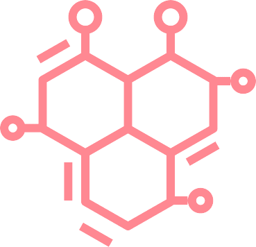
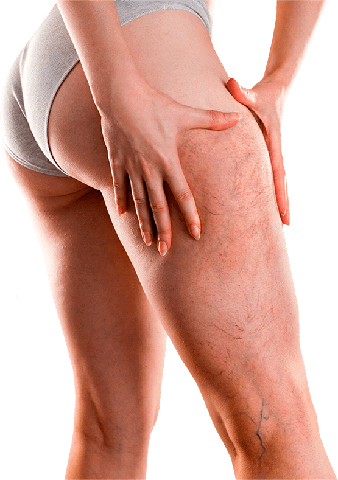
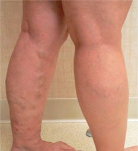
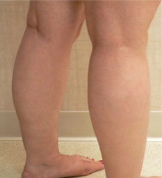

Évente 2 000 000 ember hal meg a visszér következményei
miatt. Ne legyen Ön is egy közülük!


ÁLLÍTSA VISSZA A VÉNÁKAT EGÉSZSÉGES ÁLLAPOTBA
A hatékonyságot a Budapesti Egészségügyi Akadémia
flebológusai bizonyították be
A Veniselle terápiás kúra végén az ügyfelek adatai:
93%
Csökkent gyulladásos markerek a vérben
89%
Csökkent a vénák mérete
97%
Enyhült a fájdalom , fáradtság és
duzzanat
INNEN ISMERHETI:


Veniselle
A vénás betegségek kezelésének szakértője!


A lábak egészsége és
szépsége

A Veniselle krém a Budapesti Egészségügyi Akadémia vezető flebológusainak kutatásain alapul.
A termék minden szükséges vizsgálaton átesett, amit szabadalmak és a Nemzetközi
Gyógyszerellenőrző Szövetségek tanúsítványai is megerősítenek.

A WHO 2019-ben csatlakozott a forradalmi krémformula kutatásához. A Veniselle-t az egyetlen működő, helyileg ható termékként ismerték el a visszér kezelésére.
A krémmel végzett kezelés helyreállítja a beteg vénák egészséges állapotát, ami korábban csak
sebészeti módszerekkel volt lehetséges.
SEMMI SEM TUD ÚGY GONDOSKODNI A VISSZEREKRŐL MINT A Veniselle
CSAK JÓ DOLGOK VANNAK A Veniselle KRÉM
0% szintetikus összetevő 0% antibiotikum 0% glükokortikoid hormon

Troxerutin
100% aktív összetevő
Erőteljes oldó és gyógyító hatással rendelkezik.
Boosterként hat, felgyorsítja a hatóanyagok célba
jutását.
A véraláfutások, csomók és fekélyek feloldásával
visszaállítja a vénák eredeti megjelenését.

Vadgesztenye
Erősíti az érfalakat és a billentyűket, csökkenti a
vér viszkozitását és a vérrögök kialakulásának kockázatát

Kamilla virágkivonat
Enyhíti a gyulladást, viszketést, duzzanatot,
szagtalanítja és puhítja a bőrt

Csalán kivonat
Erősíti és tonizálja az érfalakat, csökkenti a
visszerességet, javítja a vérkeringést és megszünteti a vénás pangást

Mentol
Hűsíti és nyugtatja a bőrt, csökkenti a fájdalmat
és enyhíti a nehézségi és fáradtságérzetet a lábakban

Koffein
Természetes ér tonik, rugalmasabbá teszi a bőrt és
javítja annak színét

Panthenol
Nyugtatja, puhítja és táplálja a bőrt, gyógyítja a
mikrorepedéseket, normalizálja a sejtek anyagcseréjét, növeli a kollagénrostok
erejét

Vörösbors-kivonat
Elősegíti a hatóanyagok jobb behatolását a bőrön
keresztül, javítja a mikrokeringést, növeli a vénák tónusát és csökkenti a
hajszálerek áteresztőképességét
Fehér üröm kivonat
Erősíti az ereket, segít megelőzni a vérrögöket és
a pókhálós vénákat a bőrön
Balogh Erzsébet A flebológia szakértője
A vénás elégtelenség a rossz véráramlás okozta klinikai
szindróma. A visszerekben az erek billentyűi nem zárnak szorosan. Ennek következtében a vér a
vénákon keresztül lefelé halad az alsó végtagokba, pang, és fájdalmas dudorokat és fekélyeket
képez. Ez az állapot csak rosszabbodik. A vérmérgezés amputációhoz, a vérrög pedig halálhoz
vezethet.
A Veniselle-t ajánlom a pácienseimnek, hogy elkerüljék
ezeket a következményeket és megvédjék magukat. Ez a krém a vénás reflux minden jelére hat, és a
használat első napjaitól kezdve javítja a vénák egészségét.
HOGYAN HAT a Veniselle
A vénák egészséges állapotának helyreállítása 4
lépésben
Enyhíti a gyulladást
Megállítja a prosztaglandinok – a visszerekben gyulladást
okozó anyagok – termelését
Csillapítja a fájdalmat
A vénák áteresztőképességének növelésével a krém enyhíti a
visszerek tüneteit – a görcsöket és a rángásokat
Erősít
A krém hatóanyagai erősítik a vénák érfalát. Ezáltal nő a
tónusuk, és megakadályozza a vékony vénák bőrhöz tapadását, az elzáródásokat és a
trombózist
Pihentet
A nyirokfolyadék cseppfolyósításával és a véráramlás
felgyorsításával gyulladáscsökkentő hatású. Enyhíti a fáradtságot és a "nehéz lábak"
szindrómáját
INNEN ISMERHETI:
SZÁMOS MÓDSZER LÉTEZIK. CSAK EGY MŰKÖDIK
10-ből 9 vásárló szerint a Veniselle a legjobb vénakezelés,
amit valaha próbáltak.
A grafikon arról, hogy a különböző termékek hogyan
hatnak a vénákra
Kor
Idővonal napokban
35
30
25
20
15
10
5
30
45
60
Kompressziós
kezelés
kezelés
30
45
60
Alternatív
gyógyászat
gyógyászat
30
45
60
Sebészeti
módszerek
módszerek
30
45
60
VALÓS FELMÉRÉSEK:


Előtte

Utána

Előtte

Utána

Előtte

Utána
Évente 2 000 000 ember hal meg a visszér következményei
miatt. Ne legyen Ön is egy közülük!
NINCS VÉNÁK VÁGOTT KRÉM
a kezelésre
a megelőzésre
a fáradtság tüneteinek enyhítésére használható
Rendelje meg ezt a BESTSELLER-t most: 50% kedvezménnyel
Töltse ki az űrlapot, és néhány percen belül felhívjuk a
részletek tisztázása érdekében!
* Kérjük, vegye figyelembe, hogy a helyi ÁFA - kulcs az adott ország szabályaitól függően változhat. Ügyfélszolgálati csapatunk szívesen segít Önnek ebben